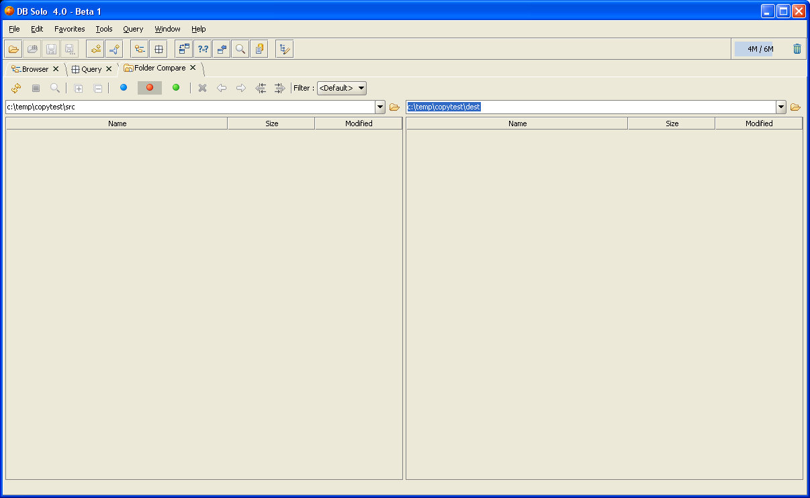
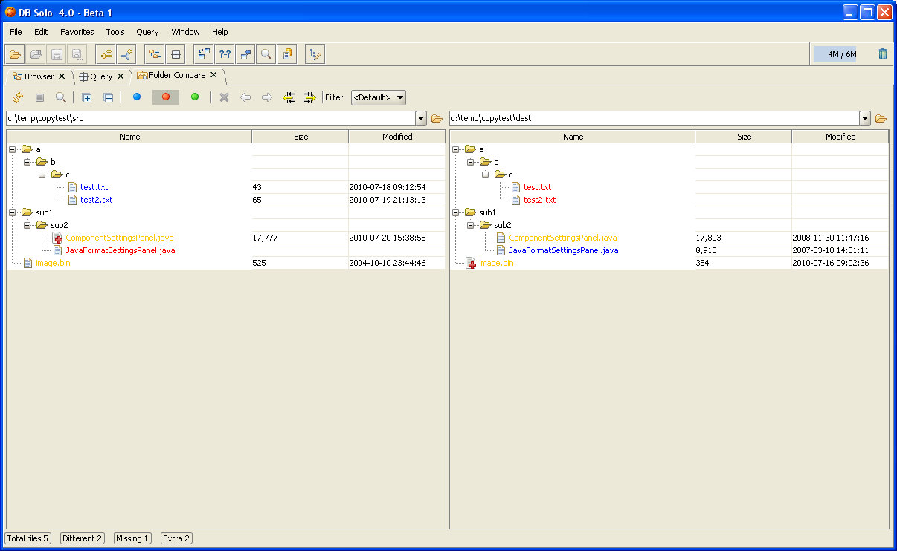
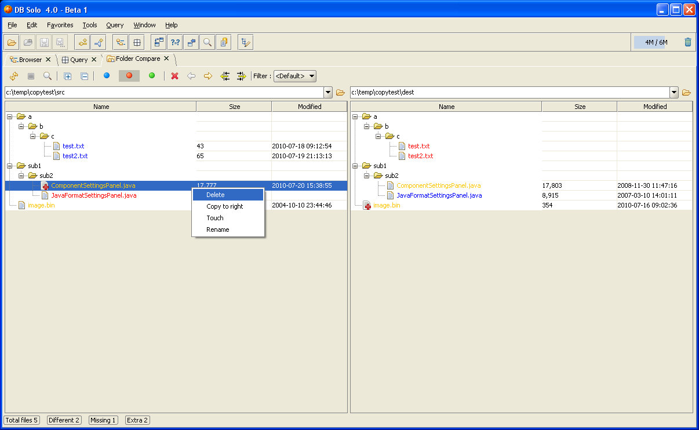
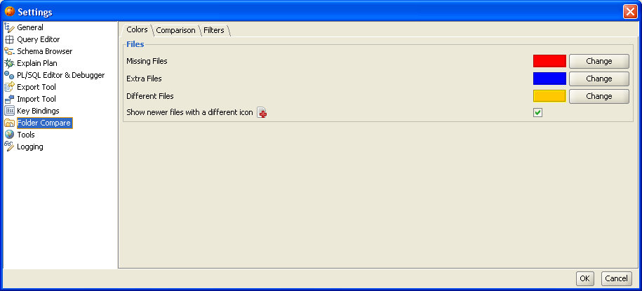
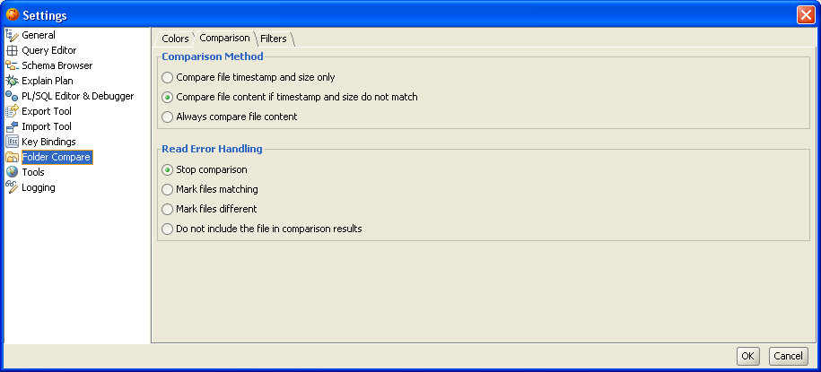
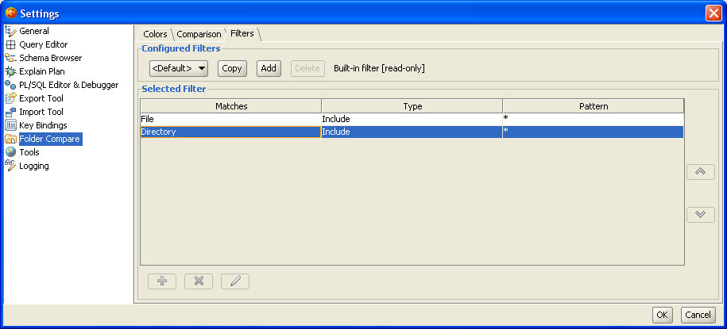

The Folder Compare Tool allows you to quickly compare two folders on your hard drive, including all files and subfolders under them. The folder comparison tool can compare both text and binary files. The Folder Compare Tool runs on all supported platforms including Windows, Mac OS and Linux.
You can invoke the Folder Compare Tool from the 'Tools/File Compare/Folder Compare' menu item in the main toolbar of DB Solo.
When you bring up the Folder Compare Tool, the first thing you will notice are the two entry fields where you need to enter the source and destination folders you wish to compare. You can either type them in manually using the auto-complete entry fields or you can click on the open-buttons to navigate to the desired folder using the file selection dialog. You can also select folders used in previous comparisons using the drop-down on either side. The Filters-drop down allows you to pick from a pre-defined set of filters (see Settings - Filter Settings). Only the files matching the filter are compared and shown in the results tree. This allows you to compare e.g. only text files (*.txt) or by any other filter you have previously created.

Figure - Select Source/Destination Folders
After you have selected the desired folders, click on the 'Run Comparison' button to start the compare process. Notice that if the folders contain a large number of files and/or they are on a network drive, the comparison could potentially take a long time.
After the comparison has finished, you will see the results of the comparison presented as trees for both source and destination. The files in the tree are colored as follows: Matching files are colored black, missing files are red, extra files are blue and finally files that are present on both sides but do not match are orange. You can change the default coloring in the settings.

Figure - Folder Comparison Results
In the picture above, files test.txt and test2.txt are present on the source side but are missing on the destination side. The ComponentSettingsPanel.java file is present on both sides but the contents of the file do not match. Notice that the side (source) that has a newer timestamp is marked with an icon that has a plus sign.
The three colored toggle-buttons in the toolbar control what kind of files are shown
You can perform various operations on the files by selecting one or more items in the tree and right-clicking on them. If the file is not present on that side (marked red) the operations are not functional for that file.

Figure - File Popup
The operations you can perform on the selected files are
You can control the behavior of the Folder Compare Tool by changing various options under the Folder Compare item in the user settings dialog. The settings are divided into several different categories: Colors, Comparison, Filters

Figure - Color Settings
The color settings screen allows you to configure the foreground color of the items in the result tree. You can change the Missing/Extra/Different colors each by clicking on the Change-button next to the color and picking a new color. The screen also allows you to select if you want to show a different icon for newer files or not.

Figure - Comparison Settings
The comparison settings screen allows you to change the comparison behavior. The comparison method-section allows you to change how individual files are compared. The following options are available
This screen will also let you select what will happen if there is a read-error encountered when trying to read the file from the disk. These errors typically happen when there is a problem with read-permissions.

Figure - Filter Settings
The filter settings screen allows you to create and modify filters that can be used to limit the types of files and folders that are included in the comparison. DB Solo comes with a set of pre-defined read-only filters that you can use as a starting point in case you need other filter types. When a filter is selected, DB Solo will apply the filter to each file/folder it finds. The filter items are evaluated from top to bottom and if a file/folder does not match any of the filter items, it will be excluded from the comparison. To create a new filter from scratch click on the Add-button or if you want to use the selected filter as a template click on the Copy-button. You can then add/remove/edit individual filter items in the table below the selected filter. The Add-dialog allows you to configure the following fields for a filter item
Notice that you cannot modify or delete any of the pre-configured filters.
| Back to Index |
DB Solo www.dbsolo.com support@dbsolo.com |